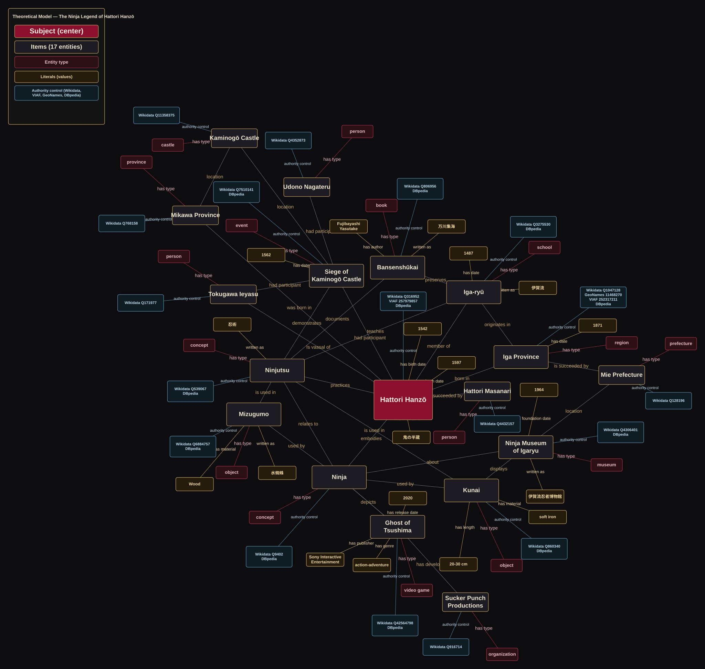
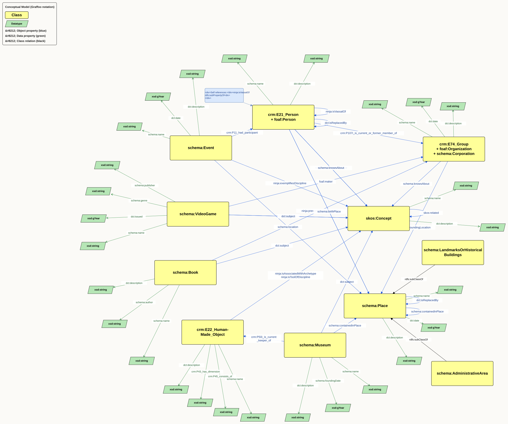
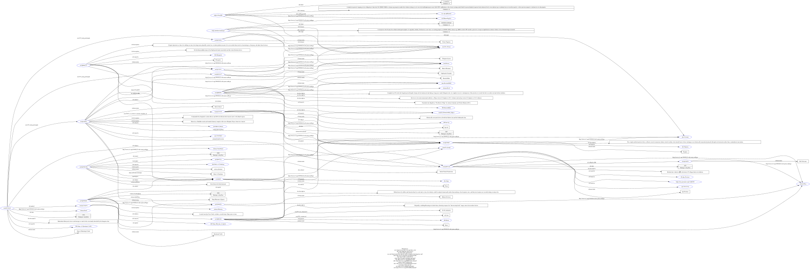

How Hattori Hanzō, a real Sengoku-era retainer, became the ninja legend, traced through the places, tools, texts and modern media that keep pointing back to him.
服部半蔵 · 伊賀 · 忍術
About
The Shinobi no mono have been speaking to the imagination for centuries. They appeared from Hollywood blockbusters to contemporary kabuki theater. Through time, fact and fiction about the Shinobi became intertwined, especially during and after the Meiji restoration (1868–1912), where the Ninja became an important part of the creation of an identity for the emerging Japanese nation.
Hattori Hanzō might have been the most famous ninja ever. He was a samurai trained in the art of the Ninja in Iga who saved the life of Tokugawa Ieyasu, and later helped him become the ruler of a united Japan. He was trained by his family in Iga. Iga was a mountain-isolated province where the art of the Shinobi was perfected. That is why, in contemporary literature, the Ninja were also referred to as Iga no mono (Person from Iga).
This project tries to keep the Ninja active, but focuses on the historical part instead of the mythologized version. In this way, the cultural heritage gets preserved in a historically representative way.
The Bridge Subject
Knowledge Organization
The mind map: Hattori Hanzō at the centre, every entity and relation
labelled with the same names used in the TEI and CSV files. The main source used was wikidata, but it has also been enriched with other sources. Hand maintained
in organization/theoretical-model.drawio and converted to
SVG by the main python function where the pipeline is located

Knowledge Organization
The same relations abstracted to classes and properties only. No
individuals. Hand-maintained in
organization/ConceptualModel.drawio, converted the same way.

The Actual Data
This is the rdf database. Its every
triple the pipeline produced, entities and literal facts (names,
dates, notes) alike, rendered by the
ldf.fi RDF Grapher
(Graphviz) straight from turtle/ninja_merged.ttl each
time main.py runs. It uses both the information from the TEI file and extra information that complements the ontology stored in extra csv files.

Ten Entities
Supporting Cast
Real people and places that never appear as their own entry in the source text, but are needed to state facts about the entities above. They are important semantically for the entities. They're kept in their own dataset (the csvs mentioned) rather than inflating the core ten.
Technical details
The files that actually produce everything above: the TEI encoding of the source text, the script that reads it (plus the CSVs) and writes RDF, the resulting merged RDF graph itself, and the XSLT stylesheet (plus its driver script) that renders the TEI as HTML. Loaded live from the project files, not pasted in by hand.
Open the XSLT-transformed TEI as HTML →
Loading…Loading…Loading…Loading…Loading…